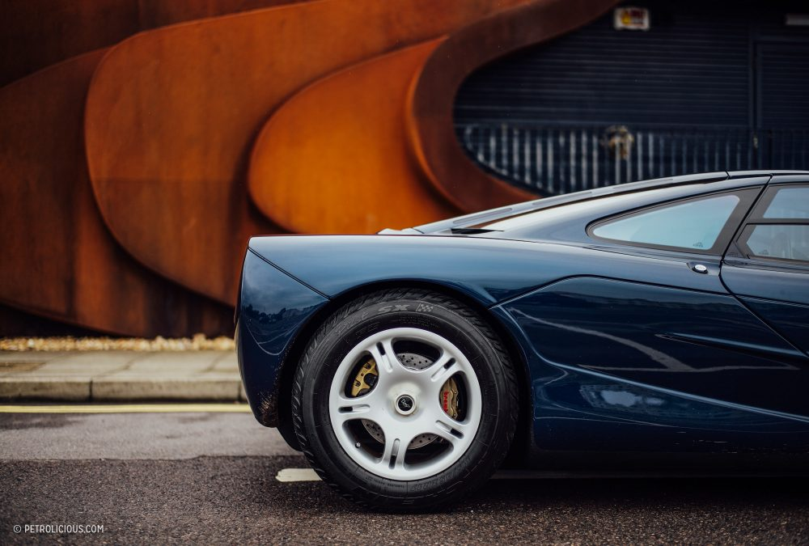
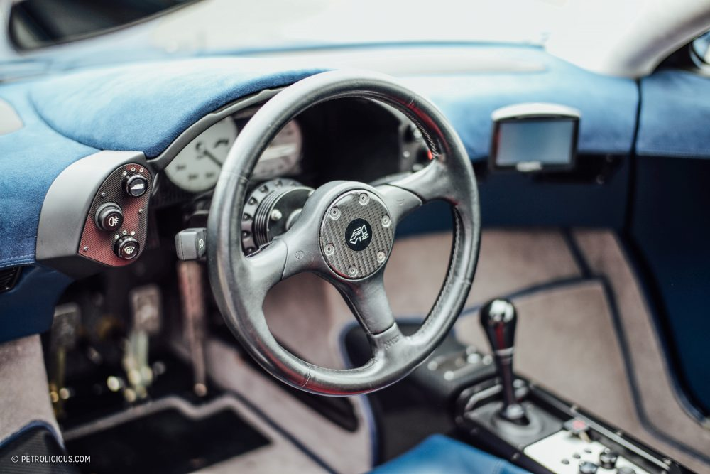

This Is What It’s Really Like To Own A McLaren F1
Everyone and their brother is talking about that stunning yellow delivery-mileage McLaren F1, a perfectly preserved, wasted opportunity. The thought of having access to a McLaren F1 and not taking full advantage of it every single day is enough to send shivers down my spine. Luckily there are people out there like the ones behind the LCAL Anthology Collection who get extraordinary use out of theirs.
I was put in touch with them when visiting my good friend Jarrah Venables, who for almost a decade ran the automotive selection at Goodwood before going private recently as a consultant. One of his clients is the LCAL Collection, a privately held collection that has some incredible meat on its bones. During the Festival of Speed, Jarrah was tasked with looking after the car during the concours portion of the event. Needless to say, when he offered me the opportunity to go for a spin and speak on the collection and about what the experience of ownership is like, I jumped at the chance..

Interviewer: So, how did this McLaren come into your life?
Collector: The LCAL Anthology Collection had been looking for one for quite a while. When they were first built it wasn’t possible due to a lack of funds, and when budget was there they’d stopped producing them! So the decision was made to go for a CLK GTR instead. We had been quite involved with private client feedback on the CLK GTR, doing quite a few test days at Hockenheim when they were developing the car. It actually felt a bit like a Lotus Elise, which came out around the same time, but with 700 horsepower! It had an exacting gearbox though, so pulling away could be a bit tricky for some. However when it came time to activate the option, we learnt that the car was to be sold without a warranty, which forced us to reconsider given that a gearbox rebuild could have cost a small fortune!.
In truth there was always a McLaren F1-shaped hole in the collection, so we kept looking, and looking, and looking, but it was tough as there weren’t any good cars around. Eventually, having looked at two or three we plumped for this car which was originally owned by Ray Bellm, who of course was the 1996 BPR Global GT Series Champion in the car’s racing version, the GTR. This car though, the street model, was painted Genesis Blue with a blue and red interior. He later sold it to another owner at which point it was repainted silver. The renowned collector Irvine Laidlaw then bought it, but soon after he developed a passion for Bugatti Veyrons, which meant we were able to buy it. Since being in the collection, we have put about 30,000 miles on the car, which apparently is the 2nd highest mileage of any F1!

This car has been resprayed maybe two or three times over the years, cleaned back and re-sprayed because, of course, it often has a lot of pebble marks on the front. The car needs to be used, and that’s that. It’s a shame that not enough of them get used. People get all fussy about protecting values. We think that if you go that way, you’re in a bad position though. It’s such a shame that people try and tuck them away exclusively as investment assets. Newer cars normally go down in price. You buy a car, you drive it, and you sell it for less money typically, but the value has been in enjoying the car. Sure most collectors have had their cake and eaten it too in recent years, but when you’re collecting for investment over enjoyment, you’ve lost the plot.
Of course, ours is always maintained at the factory. Some people moan about that because the factory maybe isn’t the cheapest, but, really, it is a special piece of engineering, and we like the idea that it goes back to its home when in need. They have the parts and knowledge, and we have a very good rapport with McLaren. You have to keep it on the road, if only just to share it with people. Whether it’s on a long distance rally or just running into a father and son who want to have their photo taken in the drivers seat at a cafe, you have to be there for those moments with a car like this. It’s part of the responsibility.